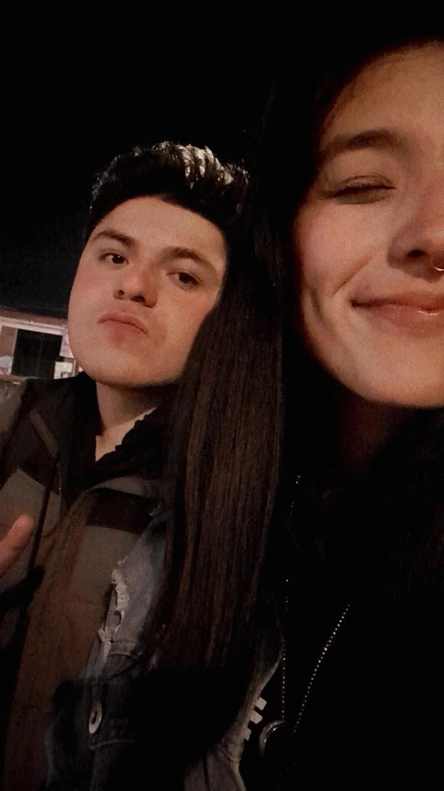
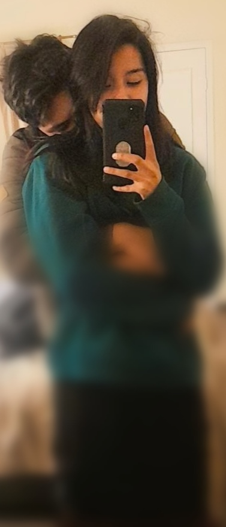
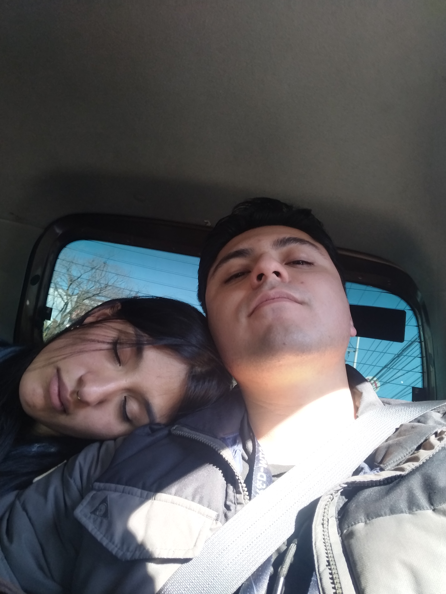
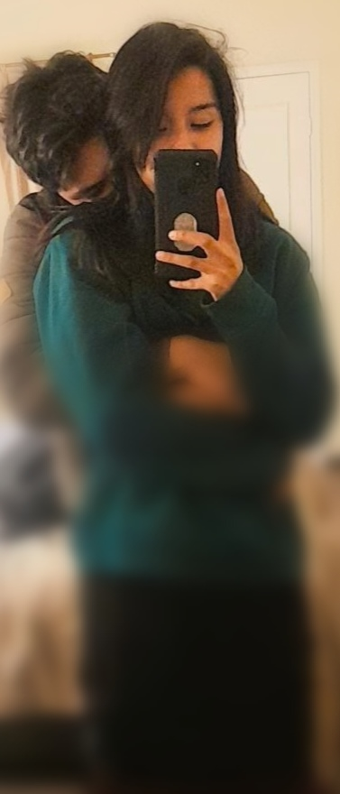
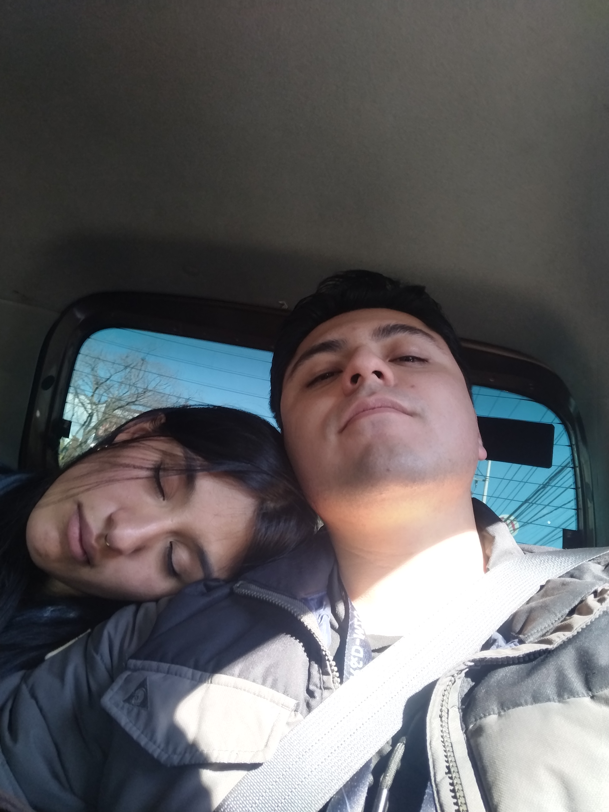
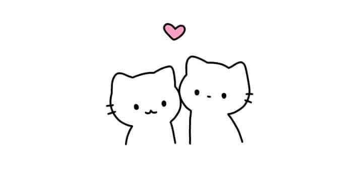

¿Quieres ser mi San Valentín?
Para [nombre de la persona], con todo mi cariño.

Este es un mensaje especial para ti. Quiero que sepas lo mucho que significas para mí y lo feliz que me haces cada día. Espero que esta pequeña página te guste tanto como a mí me gustas tú. 💖
 



❤️

💐